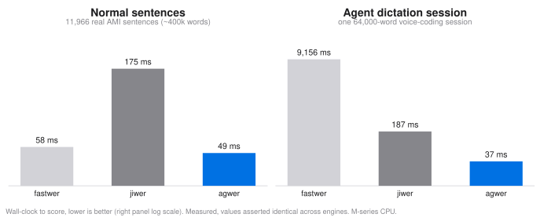
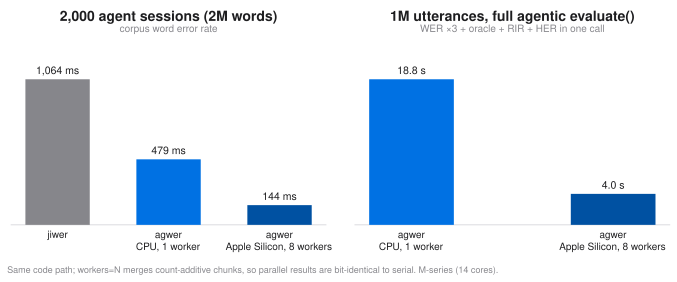

Benchmarks
All numbers on this page are measured, not estimated, on the current release: agwer 0.4.10, against jiwer 4.0.0 and fastwer 0.1.3, on an Apple Silicon M-series machine (14 cores). The harnesses live in our development repository, every engine receives identical strings, and WER agreement across engines is asserted before any timing. The page always reports the current version; the per-version performance history stays with the harnesses.
Long-context ASR: engine scaling with document length
Long-form ASR (meetings, podcasts, earnings calls) is scored at the document level, and per-pair edit distance is quadratic in document length. That quadratic term is where engines part ways. The data is real: NVIDIA Canary 1-best decodes of AMI meeting speech (5,469 segments, 22.2% corpus WER), concatenated into documents of a target length with total workload held at ~400k reference words per row, so any time growth comes purely from document length (minimum of 3 runs):
| words per document | documents | fastwer (C++ DP) | jiwer | agwer |
|---|---|---|---|---|
| 25 | 11,966 | 58 ms | 175 ms | 49 ms |
| 250 | 1,544 | 161 ms | 161 ms | 50 ms |
| 1,000 | 397 | 502 ms | 165 ms | 59 ms |
| 4,000 | 100 | 1,968 ms | 209 ms | 79 ms |
Three observations:
- Plain dynamic programming does not survive long documents. fastwer's classic O(n·m) DP grows ~35× as documents go from 25 to 4,000 words at constant total workload. The bit-parallel engine underneath agwer and jiwer processes alignment columns 64 at a time, and agwer additionally runs banded (below), so it grows only ~1.6×.
- agwer and jiwer share the same C++ kernel (RapidFuzz), and agwer's thinner layer shows. agwer calls the distance kernel directly on pre-tokenized batches; jiwer builds a full alignment per call. Same results (asserted bit-identical), roughly 3× less overhead.
- agwer leads at every document length, including the short end where lean DP used to be competitive.
Extreme case: one voice-coding dictation session (1k to 64k words)
Dictating to a coding agent produces the hardest scoring workload: one continuous session-length document. This benchmark scores a single seeded synthetic session (package names and commands mixed with English glue, technical terms split into heard words, ~20% WER) as one document (median of 5):
| session length | fastwer (C++ DP) | jiwer | agwer | vs jiwer | vs fastwer |
|---|---|---|---|---|---|
| 1,000 words | 1.3 ms | 0.34 ms | 0.10 ms | 3.4× | 13× |
| 4,000 words | 21.2 ms | 1.94 ms | 0.49 ms | 4.0× | 43× |
| 16,000 words | 499 ms | 15.7 ms | 3.5 ms | 4.5× | 143× |
| 64,000 words | 9,156 ms | 187 ms | 37.3 ms | 5.0× | 245× |
Character error rate on the same 64,000-word session (~345k characters): agwer 433 ms vs jiwer 4,151 ms (9.6×), values identical.
Two observations:
- Quadratic DP is disqualified at session length. A long dictation session costs fastwer 9.2 seconds per scoring call; the bit-parallel engines stay far under 200 ms. If your evaluation loop rescores after every agent edit, that is the difference between interactive and not.
- Auto-banding is where agwer's widening lead comes from. Above 256 elements, agwer starts the distance computation in an Ukkonen-style band sized by an error-rate prior instead of the full DP width; the band doubles until the true distance provably fits, so every result stays exact — pinned by tests from 0% to 100% error rates. Typical ASR corpora gain 2–10×; a pathological corpus (~90% error) pays about 1.3×. Short utterances below the gate take the plain path.
Large-batch evaluation: many entries
The complementary axis to document length: entry count. The workload is the real 30-session WSJ corrector batch (the same records as the example dataset) replicated to size — short utterances, many entries, the LLM-output batch regime (median of 3):
| entries | fastwer | jiwer | agwer (strings) | agwer (pre-tokenized) | agwer workers=8 |
|---|---|---|---|---|---|
| 10,020 | 12 ms | 58 ms | 16 ms | 3 ms | 67 ms |
| 100,020 | 117 ms | 861 ms | 289 ms | 33 ms | 113 ms |
| 1,000,020 | 1,153 ms | 8,681 ms | 2,834 ms | 339 ms | 655 ms |
On short entries the per-call cost is tokenization, not edit distance:
materializing a million Python token lists dwarfs the C-level alignment
(fastwer avoids it by fusing tokenize+DP inside C++, which is why it
leads the plain string column at scale). agwer's answer is to let you pay
that cost once: every word-level measure accepts pre-tokenized
list[list[str]] input directly.
import agwer
refs_tok = [agwer.tokenize(s) for s in refs] # once per corpus
hyps_tok = [agwer.tokenize(s) for s in hyps]
agwer.wer(refs_tok, hyps_tok) # identical value, no per-call tokenization
agwer.ser(refs_tok, hyps_tok) # mer / wil / wip work the same way
Tokenize once and every subsequent scoring call runs 3.4 to 4x faster
than fastwer at every scale, single-threaded. This is exactly the shape
of an agent evaluation loop: the corpus is fixed, the outputs change, and
rescoring should not re-pay tokenization. (Normalize before tokenizing;
the fast path requires normalize=None so the two can never silently
disagree.)
The number the comparison cannot show: the full agentic evaluation
(three WERs, both oracles, RIR, HER) over the same 1M entries × 5-best
runs in 4.0 s with workers=8. No other engine computes those
quantities at all.
Multi-speaker: cpWER and tcpWER vs MeetEval
Speaker-attributed metrics against the reference implementation, results asserted identical before timing (median of 5). cpWER on speakers x words-per-speaker meetings; tcpWER (collar 5 s) on timestamped meeting sessions:
| workload | MeetEval | agwer | speedup |
|---|---|---|---|
| cpWER, 4 spk × 2k words | 93 ms | 5.8 ms | 16× |
| cpWER, 8 spk × 2k words | 289 ms | 21.7 ms | 13× |
| cpWER, 8 spk × 8k words | 4,504 ms | 290 ms | 15.5× |
| cpWER, 16 spk × 8k words | 15,300 ms | 1,160 ms | 13.2× |
| tcpWER (collar 5), 8 spk, 8,982 words | 152 ms | 43 ms | 3.5× |
| tcpWER (collar 5), 8 spk, 36,267 words | 1,387 ms | 185 ms | 7.5× |
The tcpWER kernel is a pure-Python time-windowed DP: only hypothesis words whose collar-expanded interval can still interact with the current or a later reference word are active, which plays the role of MeetEval's C-level pruning; overlapping speech and timing jitter only widen the window instead of falling off a cliff. Exactness is pinned by an 8,000-case fuzz against the naive DP (including deliberately disordered timings) plus the meeteval golden fixture.
agwer on CPU and Apple Silicon
The single-worker column is the portable CPU path: pure RapidFuzz, the
same code any x86 or ARM machine runs. On Apple Silicon, agwer
additionally ships native arm64-darwin wheels and scales across
performance cores with evaluate(..., workers=N), since every aggregate
it computes is count-additive and merges exactly — parallel results are
bit-identical to serial.
Long-form workload (1,000-word documents, ~2M reference words, full
evaluate()):
| setup | time | speedup |
|---|---|---|
| CPU path, single worker | 0.73 s | 1.0× |
| Apple Silicon, 4 workers | 0.26 s | 2.8× |
| Apple Silicon, 8 workers | 0.18 s | 4.0× |
Short-utterance workload (1M utterances × 5-best, full agentic evaluation):
| setup | time | speedup |
|---|---|---|
| single worker | 18.8 s | 1.0× |
| 8 workers | 4.0 s | 4.7× |
Reproduce the in-package benchmark on your own machine:
python -m agwer.bench --workers 8
How it got fast
Four exact-by-construction optimizations compound across this page, each gated on bit-identical outputs before release: the auto-banded distance (Ukkonen band with doubling, long inputs), pre-tokenized batch input (pay tokenization once per corpus), shared-reference DP reuse in the agentic pipeline (the n-best is normalized, tokenized, and aligned once; 1-best distances, oracle pick, and the compositional-oracle vocabulary are views over that pass), and an ASCII fast path in the default normalizer (C-level translate replacing two regex passes, derived from the same regex so the output cannot differ). The per-version measurement history lives with the harnesses in the development repository.
The same numbers as charts

agwer is the fastest engine in both regimes, and the gap widens exactly
where agents live: long dictation sessions. On Apple Silicon the same
count-additive design then scales across performance cores with
workers=N, with results bit-identical to a single worker:
